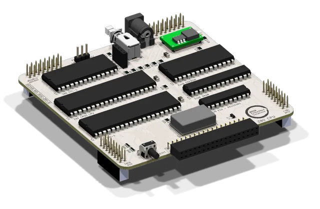
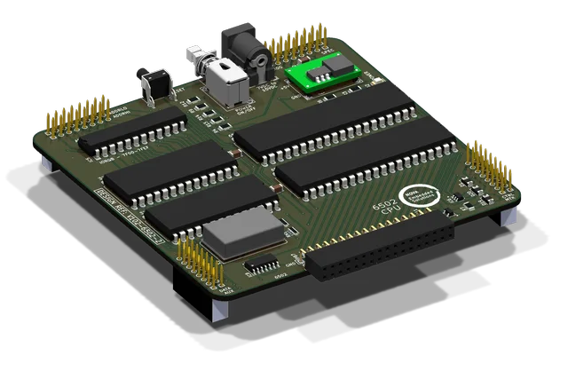

How it fits together
Rebuild the machines of the 1980s from real 8-bit parts. Recreate the Memotech MTX512 exactly. Learn by designing every layer, and make it modular rather than a one-off.
Conceptual evolution
- Phase 1: Single-board Z80 computer
- Fully stand-alone, with timer and I/O
- No bigger than 100 × 100 mm, for economy
- Phase 2: In-circuit programmer
- Code, click and upload from VS Code
- Takes in software, firmware and hardware
- Phase 3: Input/output module
- Optional, for any CPU board
- Fits with or without the programmer
- Phase 4: Video and sound module
- Drives a display and an amplifier
- Fits with or without the programmer
- Phase 5: 6502 CPU module
- A 6502 version with timer and I/O
- Stand-alone, or with the same programmer, I/O and video boards
- Phase 6: Memotech MTX CPU module
- Z80 and original binaries, to work identically to the MTX512
- Slots into the CPU position and reuses the video and I/O boards
Identical boards, one bus
- Eight 8-way stacking sockets in the four corners carry address, data, control and power through every board.
- Any stacking order works electrically. Only tall parts limit placement.
- One CPU board plus any optional boards makes a complete machine.
- Each CPU board's PLD turns its CPU's bus into the common Z80-style bus, so the I/O and video boards don't care which CPU drives them.
- The programmer takes the bus with BUSRQ and drives the ROM through ROMCSX, ROMWEX, ROMOEX and RESX, decoded by every CPU board.
The v102 expansion philosophy
Each v101 board carried its own selection of connectors. v102 is completely freeform: every bus line reaches every board, with a new auxiliary group for expansion. The programmer accepts both generations.
- Connectors are the long-pin, through-board type with the socket side down.
- Unregulated power can enter at the programmer, but regulation happens on the CPU board, which feeds the rest.
Vertical stacking assembly
Modules may be stacked in any sequence.
In-circuit programmer
- Program in assembly in a modern editor, VS Code.
- One click assembles, uploads to the programmer and on to the target.
Three CPU board options
- Stand-alone Z80 computer with on-board I/O and counter/timer.
- Swap-in 6502 version. Both work with the programmer, video and I/O boards.
- MTX512 CPU board: with the video and I/O boards it replicates the 1980s machine.
Video and sound board
- Optional for the Z80 and 6502.
- The same video and sound chips as the MTX512.
- Component or composite video, and sound, on RCA sockets.
Input/output board
- 8-bit output latch and 8-bit input/output port.
- PS/2 keyboard, or an MTX512 matrix keyboard.
- Serial at up to 115,200 baud over DB9 or USB.
Development assembly
The programmer becomes a backplane, with top access to all three main boards for debugging.
- There are no electrical restrictions on position, although connectors such as the video board's RCA sockets dictate where some boards go.
- Raw 7.5–18 V DC goes to either the programmer or the CPU board.
- Once a monitor has been programmed, the CPU board is stand-alone for the Z80 and 6502 systems.
- Extra MTX boards can be installed above the MTX CPU board.
Three machines, one set of boards

Z80 SBC- Z80 at 4 MHz, 32 K ROM, 32 K RAM, PIO and CTC on board
- Complete on its own
- Optional: I/O, video + sound, LCD

6502 SBC- W65C02S at 1 MHz with a VIA
- Its PLD maps a 6502 I/O window onto the Z80 port space
- Optional: the same I/O, video + sound and LCD boards
 Memotech MTX512
Memotech MTX512- Z80 with the MTX ROM/RAM paging
- Runs the original BIOS, BASIC and games
- Required: the I/O and video + sound boards
Code, click, upload
Time runs downwards, and the upload travels left to right. Red and blue LEDs on the programmer blink at rates that match each stage.
- Write assembly in VS Code and click makeWaitRun the program in ROM
- Assemble and link into one binary (vasm)
- Python script finds the programmer's port and connects
- Send the binary→Wake up and store it in serial RAM
- Wait for replyKeep storing until the end-of-file marker
- Check the echo against the file←Send it back for checking
- Send the go-ahead→Take control of the target's bus→CPU lets go of the bus
- Show progress←Upload the binary to the ROM→ROM is written
- Show progress←Read the ROM back and compare←ROM is read
- End the sessionRelease the bus and reset the target→Run the new program
The first version ran from a script called MAKEIT.PY at 115,200 baud. Today it is uploadROM.py at 57,600.